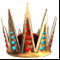
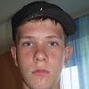
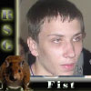

RSG King of the hill: part 2
Казалось всего пару дней назад проходил первый матч за титул сильнейшего игрока нашей команды. В напряженной борьбе четверых игроков сильнейшим оказался Fist и примеривший тогда на себя 
. Официальным претендентом был объявлен Диабло. Но, к сожалению, Диабло не смог отыграть сегодняшний отборочный матч. Поэтому свою первую защиту наш чемпион будет проводить против победителя пары отличнейших молодых игроков, которые показывают прекрасные результаты в последнее время. Итак, представляем Вашему вниманию отборочный шоу-матч между:
отборочный матч
Adoveov--[2:0]--Karter

RSG.Adoveov: Общеизвестно, что в матчапе орк-андед существует сильный дисбаланс в пользу орка. Сегодня в матче за титул "короля горы" мне предстоит сражаться с двумя орками, но я приложу все усилия и уверен, что у меня есть неплохие шансы.
RSG.Karter: Мне стало известно, что в случае моей победы в сегодняшнем "короле горы" я займу место в основе команды. Этот факт придает мне мотивации я буду стараться показать красивые и зрелищные игры
Первая игра на карте ТМ. андед играет в гулей, орк Фс+ТЦ и райдеры/гранты. Впоследствии Адовеов переходит на дестроеров/гарг, практически каждый размен заканчивается в пользу андеда, который не дает орку поставить эксп. Орк несколько раз почти выравнивает положение удачно используя бэтов, но Адовеов дождавшись оканчания рудников на финалке побеждает.
Вторую карту выбирает орк-ТС. На сей раз андед играет в пауков, удачно крипится, но несколько разменов заканчиваются в пользу орка, который строит масс аир, т3 и прокачивает ТЦ. Виверны с ядом и ТЦ довольно легко убивают пауков, андед переходит на гарг, но ФС качает лайтинг на 5 лвл-е выигрывает сражение и казалось- все в его руках, но андед с хай лвл героями играя hit-and-run в итоге совершает почти чудо, закидав койло-новой сначала ФС, а потом и виверн и вытащив почти проигранную игру. Итак, Адовеов побеждает Картера со счетом 2-0 и становится официальным претендентом на титул "короля горы".
King of the hill 2

Fist--[0:0]--Adoveov
итак, до первой защиты Фистом его чемпионского титула осталось совсем немного времени. Нас ждет действительно интересный матч между орком ветераном и действительно быстро прогрессирующим андедом, который похоже скоро прочно займет место в основе нашей команды...
RSG.Fist: its will be 3-0. n/c :D
Что ж, нам осталось лишь дождаться начала этого интереснейшего матча...
19:15: Итак, игры начались. Стартовая карта ТМ. Очень удачное начало со стороны орка, который смог быстро прокрипиться до второго уровня и развести ДК на телепорт. Фист ставит эксп и массит юниты, а Адовеов идет в хай теч и старается прокачать героев. Казалось- все в руках орка с его прокачанным и закупленным ТЦ и 80 лимита, но Фист очень неудачно дает бой, не смог убить вирмов, которых было 3 и проигрывает финалку. Счет 1-0 в пользу претендента на титул чемпиона. Второй картой орк выбирает ТМ...
20:00: Вторая карта, андед играет более стандартно, гули+дестроеры. Фист ставит эксп, масс аир. В итоге орк пережив несколько неприятных минут пуша с первыми дестроерами логично наращивает лимит и...и 1-1!
20:30: Стартует четвертая карта- ЛТ. Как думаю многие поняли, выбрал ее проигравший третью карту Фист. Черепахи, ближние респауны вроде бы все не плохо для орка, но Адов сыграл так же как первую карту, неплохо контролил в середине игры, раскачал героев, а потом просто отсиделся до хай теч юнитов. Длинная и равная игра, но счет становится 2-1 в пользу претендента, который имеет возможность стать чемпионом уже сейчас...
20:45: четвертая карта показала, что рано короновать Адовеова. Фист отыграл почти безупречно, убил много гулей уже в начале, прекрасно контролил уводя юниты на очень маленьком кол-ве НР. В общем игра закончилась убедительной победой орка за 10 минут. НАс ждет решающая- пятая игра...
21:15: И все же у нас НОВЫЙ . В решающей игре андед опять играет в пауков, качается и доживает до вирмов. В некоторые моменты Фист, казалось, выглядел даже слегка растерянным, не понимающим что же ему делать. В итоге на финалке не зарешали даже вивы с ядом. Итак, итоговый счет 3-2 и Адовеов побеждает. Поздравления нашему новому чемпиону и конечно респект за прекрасную игру чемпиону бывшему.
Так или иначе, но уже в ближайшее время нового чемпиона ждет сложнейшее испытание. Ведь в следующем отборочном матче через две недели сразятся Хорек и Нубкиллер...